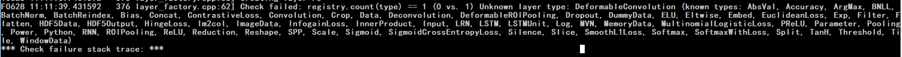

由于工作需求，需在 Windows 平台安装 Caffe, 并在此基础上添加新的层，对 Caffe 进行重新编译。
环境配置
- Windows 10
- Visual Studio 2015 Community Edition
- Cuda 8.0
- Cudnn 5.1
- Anaconda2 虚拟环境中的 python 3.5
- Cmake 3.11.1
- BVLC/Caffe
- Git
STEP 1
默认已经安装好 Cuda 8.0，并已经将 Cuda 的安装路径中的某些文件夹添加进环境变量。
默认已经将 Cudnn 中的文件放置到 Cuda 安装路径的对应文件夹中。
将 Cmake 命令所在路径添加进环境变量
将 python 环境中 python.exe 以及 lib 文件夹所在路径添加进环境变量。
将 Git 命令添加进环境变量。
STEP 2
从 BVLC 的 Caffe Repo 上下载 Caffe 工程。
1 | git clone https://github.com/BVLC/caffe.git |
STEP 3
修改 BVLC/Caffe windows 分支下 scripts\build_win.cmd 文件
因为我们没有定义 APPVEYOR，所以直接拉到 else（大约 69 行）以后。在 else 代码块中，设置相应参数：
1 | WITH_NINJA=0 // 不使用 ninja 这个 generator，因为会报错。查看 cmake 拥有的 generator, 在 cmd 中输入 cmake --help |
STEP 4
运行 scripts/build_win.cmd 文件，等其完成。它会先编译 .cu 文件，再编译 .cpp 文件。最后会生成 caffe.exe 等可执行文件以及 caffe 的 python 接口。
注意：在编译过程中，脚本可能会下载一个依赖包到 C:\\Users\username\.caffe\dependencies 文件夹下，可手动下载，将其解压到此文件夹即可。
Note：此脚本执行完毕后，不用再打开 Caffe.sln 工程进行 build，因为这些工作在脚本里都完成了。
最后得到的可执行程序在 caffe/build/tools/Release 中，python 接口在 caffe/python/caffe 中，将 caffe/python/caffe 路径添加进 python 的环境变量中或者将此文件夹拷贝进 python 的 site-packages 中均可在 python 中调用 caffe 的 python 接口。
STEP 5
对编译结果进行测试。参考 这篇文章
添加自定义层
由于任务需求，因此需要在 Caffe 中添加新的层，这只要涉及 caffe 中的 /include 和 /src 文件夹，将需要添加的文件拷贝进原生的 BVLC/Caffe 中，（注意：不可整体替换这两个文件夹中的所有源码文件，因为相同文件名文件的代码可能是有区别的，因此，只将新增的源码添加进 Caffe 工程中即可），并根据改变，修改 src/proto/caffe.proto 文件，具体方法看 这篇文章。
最后，按上述步骤重新编译即可。
参考文章
- https://software.intel.com/zh-cn/articles/installation-and-configuration-of-bvlc-caffe-under-windows-the-caffe-learning-notes-part1
- https://blog.csdn.net/bvl10101111/article/details/74837156
Trouble Shooting
Trouble on Windows
1.在按上面的步骤成功编译后，再使用命令 /path/to/caffe.exe test -model /path/to/my.prototxt -weights /path/to/my.caffemodel 进行测试，会报错如下图。 
可以看出，新添加的五个层里有三个已经存在，分别是 DeformableROIPooling, ROIPooling 和 SmoothL1Loss, 不存在的两个层为 DeformableConvolution 和 ResizeBilinear. 通过查看 src/caffe/layers/deformabe_conv_layer.cpp 和 src/caffe/layers/resize_bilinear_layer.cpp 文件，发现这两个文件都在最后一行差了 REGISTER_LAYER_CLASS(DeformableConvolution); 或 REGISTER_LAYER_CLASS(ResizeBilinear);。在这两个文件后分别添加对应的代码，重新编译。
通过比较，发现原版 BVLC-Caffe 的 src/caffe/layer_factory.cpp 和 添加过新层的 cafe-fast-rcnn 这个 Caffe 的 src/caffe/layer_factory.cpp 文件有所不同，更改过的文件中有关于 DeformableConvolution 和 ResizeBilinear 的内容，（可通过文档比较工具查看）。个人猜测这个就是上面 src/caffe/layers/deformabe_conv_layer.cpp 和 src/caffe/layers/resize_bilinear_layer.cpp 文件没有最后一个 REGISTER 语句，而其在 Linux 平台能够调用 DeformableConvolution 层的原因。但是，我从网上找到一个博客说，新版 Caffe 不需要在 layer_factory.cpp 文件中添加相关内容，只需要在对应 .cpp 文件中写上 REGISTER 语句就好。
2）配置该层：包括注册和在caffe.proto中设置相关参数。在较新版本的caffe中，用户只需要
在编译caffe的过程中，会根据caffe.proto文件中定义的参数接口来编译相关层的代码。一般只需要做3.1和3.2两部即可。
注意：不需要在layer_factory.cpp文件中添加新层的头文件。
来源
经过验证，我发现确实只要在 .cpp 文件后面添加对应的 REGISTER 语句就好。
2.在解决了上述问题后，执行 /path/to/caffe.exe test -model /path/to/my.prototxt -weights /path/to/my.caffemodel -gpu 0，报错 Py_Initialize fails - unable to load the file system codec，找了很多资料，觉得可能是多个版本的 python 冲突问题，但是我把环境变量 PATH 中全部改成有关虚拟环境 tensorflow 下的路径都无效。个人感觉是不知道在哪里仍然默认指向 Anaconda2 的外层 python，即使在 PATH 中修改也无效。因此，我重新用 python2.7 编译了自定义的 caffe。完成后执行上句命令，不再报此错误，而是报 ImportError: No module named site，我使用此处的最高票答案解决了问题。继续执行前面的命令，出现 ImportError: No module named gpu_nms，这是由代码 from nms.gpu_nms import gpu_nms 引起的，目的是从 gpu_nms.so 文件中导入 gpu_nms 函数。而 gpu_nms.so 是 linux 平台上的动态链接文件，不能在 windows 上使用，因此需要从源码重新编译出 windows 下的动态链接文件。使用 此工程 并运行 python setup_cuda.py build 可编译出 Windows 下的 .pyd 文件供 python 导入。（运行前需先修改 include_dirs = [numpy_include, '/path/to/cuda/include']，且有可能会提示需安装 VC 9.0，根据提示下载安装即可），这样，就能导入 gpu_nms 函数了。
3.解决上述问题后，执行命令，会报一个 MS VC 有关的错 - Runtime error R6034，这个是一个与 msvcr90.dll 有关的错。这个 dll 文件是由系统提供的，根据后来分析发现，Anaconda 中也会提供这两个文件，分别位于 Anaconda 根目录和 Library/bin 目录下。我根据这个问题的最佳答案解决了此问题。由于环境变量 PATH 较为复杂，我无法修改 PATH，因此我将 Anaconda 中的两个文件进行了重命名，解决了这个问题。
4.解决了上述问题后，使用上述命令执行依旧错误，主要是在 Creating layer rpn_rois 处，会出现 Caffe.exe 已经停止运行 的错误。但是没有任何错误信息，困扰了好久。后来，我尝试使用 pycaffe 进行 test，在 caffe.Net() 函数中传入 model_path 和 weights_path 后执行，报错 AttributeError: 'ProposalLayer' object has no attribute 'param_str_'，这是由于 ProposalLayer 的定义中，有一句 layer_params = yaml.load(self.param_str_)，这是老版的 caffe 中定义的属性。由于我的是在新版的 bvlc-caffe 的基础上添加的新的层，因此会报错。而在 Linux 中没有报错，个人觉得是由于 Linux 版本的 modified caffe 是基于老版的 caffe 得到的。解决办法：将 param_str_ 改成 param_str 即可，参考这里。
Trouble on Linux
在 linux 中同样执行 /path/to/caffe test -model /path/to/my.prototxt -weights /path/to/my.caffemodel 时，会先报错
Creating layer rpn_rois ImportError: No module named rpn.proposal_layer
这是因为在执行时，my.prototxt 需要调用 rpn/proposal_layer.py 文件，因此，需要将 rpn 所在路径加入 PYTHONPATH 或者在此路径下执行。
上一步解决后，再次执行命令，会报错 Check failed: registry.count(type) == 0 (1 vs. 0) Solver type Nesterov already registered.. 这是因为 .bashrc 文件中将一个原生的 caffe 的 python 接口添加进了 PYTHONPATH, 而真正使用的是自己更改过的 caffe. 因此，将 .bashrc 中 PYTHONPATH 关于原生 caffe 的部分去掉。
后来，又报 rpn/proposal_layer.py 文件中 calss ProposalLayer(caffe.Layer): AttributeError:'module' object has no attribute 'Layer'。此时，将自己更改过的 caffe 的 python 接口添加进 PYTHONPATH 中即可。
总之，解决上面 2 个错误的关键就是将自己所使用的版本的 caffe 添加进 PYTHONPATH，并确保其他版本的 caffe 不在其中。
接着，继续运行同样的命令，会报错 Check failed: status == CUDNN_STATUS_SUCCESS (8 vs. 0) CUDNN_STATUS_EXECUTION_FAILED. 个人感觉这是一个跟 gpu 有关的错，由于 .prototxt 文件中在 rpn_rois 层设置了 gpu_id 参数，因此，需将此参数与 caffe test 命令执行时使用的 gpu id 相同。若文件内设置为 1，则命令应为 /path/to/caffe test -model /path/to/my.prototxt -weights /path/to/my.caffemodel -gpu 1